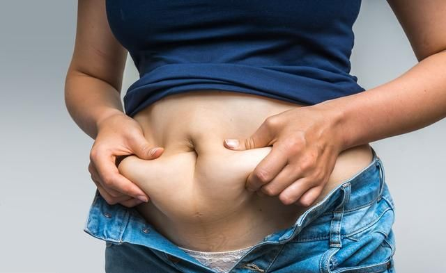

肥胖的危害——七大并发症
- 脂肪肝
肥胖者的高胰岛素血症，使其内因性甘油三酯合成亢进，就会造成在肝脏中合成的甘油三酯蓄积，从而形成脂肪肝。脂肪肝是仅次于病毒性肝炎的第二大肝病，并可发展成脂肪性肝炎，肝纤维化和肝硬化，后期他们并发腹水，肝性脑病，消化道出血甚至肝癌等。
- 糖尿病
肥胖是引发糖尿病重要危险因素之一，因为肥胖会导致细胞对胰岛素的敏感性下降，造成糖的利用障碍，使血糖升高，出现糖尿病。。世界卫生组织估计，约50%的肥胖者将来可能患上糖尿病，肥胖者发生二型糖尿病危险性是正常人的三倍，肥胖甚至会使二型糖尿病患者的正常寿命缩短长达八年。
- 高血脂
跟据肥胖的部位不同，可分为内肥胖和外肥胖，内肥胖主要体现在血液和内脏器官的肥胖，高血脂就是其中之一。高血脂是由于机体对游离脂肪酸的运动利用减少，血液中的游离脂肪酸积累，造成了血脂容量升高，高血脂者经常得不到患者的重视，但事实上还是心脑血管健康的慢性杀手，容易导致血管硬化，血栓，肾脏疾病和动脉硬化等。
- 高血压
身体肥胖程度与高血压的发生存在一定的关系，肥胖等级越高，患高血压的危险性也就越大，一个重度肥胖的人发生高血压的机会是身体超重者的五倍多，是轻度肥胖者的两倍多，最近不明物质的量会多，再一次询问制度实现的美梦成真，高血压的发生几率甚至要比非肥胖者高50%。
- 心脏病
多余的脂肪会使血液得不到充足的氧气，为了弥补这种情形，身体会制造过量的红血球细胞，使血液变得粘稠，流动速度滞缓，过度肥胖者，心脏会因为过度疲劳而扩张衰弱，严重者出现充血性心脏衰竭，脂肪粘附血管壁脂质沉积在动脉壁内，致使管腔狭窄，硬化。你们见过疾病，心绞痛，中风和猝死。侨中永生。
- 高尿酸
肥胖引起高尿酸血症的机制是肥胖者，收入能量增加导致飘零，合成增多，从而产生更多的腰酸，血液中尿酸持续升高的危害，其他高尿酸血症患者由于体内的血尿酸浓度过高。在一定条件下，危机图尿酸结晶沉积到关节，容易导致痛风的发生，引起痛风性关节炎，造成关节变形，如果沉积到肾脏，则会引起痛风性肾病严重者，最终发展成为尿毒症，危害患者生命。
- 睡眠呼吸暂停综合征
阻塞性睡眠呼吸暂停综合征是成年人中常见的疾病，而肥胖是她最常见的因素，不仅影响患者的睡眠质量，还会引起一系列的病理生理改变，如白天嗜睡，疲劳，头痛，出汗，夜间遗尿，认知和智力的下降或性格异常的呼吸暂停，期间氧饱和度的下降，还可导致一系列心律失常的发生。包括窦性心动过缓，窦性停搏，房室传导组织以及实行心律失常的，增加了患者夜间发生心绞痛和心肌梗死的风险。
